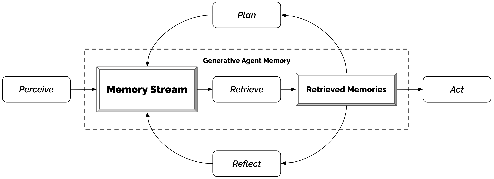

背景与要解决的问题
四十多年来，研究者一直设想能作为可信人类行为代理（believable proxies）的计算智能体——用于沉浸式环境、人际沟通排练、社会科学理论检验、游戏 NPC 等。但人类行为的空间浩瀚复杂：LLM 虽能在单一时间点上模拟人类行为，长期一致性却需要专门的架构——要能管理不断增长的记忆（新交互、冲突、事件随时间出现与消退），处理多智能体间级联展开的社会动态。
"Success requires an approach that can retrieve relevant events and interactions over a long period, reflect on those memories to generalize and draw higher-level inferences, and apply that reasoning to create plans and reactions that make sense in the moment and in the longer-term arc of the agent's behavior." 成功需要这样一种方法：能够在长时间跨度内检索相关事件与交互，对这些记忆进行反思以归纳出更高层次的推断，并运用这些推理来制定既符合当下、又符合智能体行为长期弧线的计划与反应。
实现细节：小镇（Smallville，灵感来自《模拟人生》）中有 25 个智能体，底层模型为 gpt3.5-turbo（写作时 GPT-4 API 尚为邀请制）；模拟 25 个智能体两天耗费了数千美元 token 费用、多天运行时间。
核心观点
观点 1：一切以自然语言记录——记忆流是架构中心
架构核心是记忆流（memory stream）：一个完整记录智能体经历的数据库，每条记忆对象含自然语言描述、创建时间戳、最近访问时间戳。最基本的元素是观察（observation）——智能体直接感知的事件（自己的行为、他者的行为、环境状态如「冰箱空了」）。架构中的一切都以自然语言记录与推理，从而能充分利用 LLM。
观点 2：检索三要素——近因、重要性、相关性
完整记忆流太大、装不进上下文也会干扰模型，因此需要检索函数挑出与当前情境相关的子集：
"score = αrecency·recency + αimportance·importance + αrelevance·relevance" 最终检索得分 = 近因 × 重要性 × 相关性 的加权和（三项各自 min-max 归一化到 [0,1]，实现中三个 α 均取 1）。
- 近因（recency）：距上次访问的游戏小时数上的指数衰减函数，衰减因子 0.995；
- 重要性（importance）：直接让 LLM 给记忆的「深刻程度（poignancy）」打 1–10 的整数分——「刷牙」得 1 分级别，「分手/大学录取」得 10 分级别（例：「打扫房间」得 2，「约心上人约会」得 8）；
- 相关性（relevance）：记忆文本嵌入向量与查询嵌入向量的余弦相似度。
观点 3：反思（reflection）——把记忆合成为更高层的推断
只有原始观察的智能体难以泛化：Klaus 被问「想和谁共度一小时」时，若只看观察记忆会选互动次数最多但只是点头之交的 Wolfgang；有了反思，他能从「Klaus 花数小时做研究」「Maria 也在努力做研究」归纳出「我热爱研究、与 Maria 有共同兴趣」，从而选 Maria。反思机制：
- 触发条件：最近感知事件的重要性分数之和超过阈值（实现中为 150），实践中智能体每天反思约 2–3 次；
- 流程：取最近 100 条记忆 → 让 LLM 提出「3 个最显著的高层问题」→ 以问题为查询检索相关记忆（含已有反思）→ 让 LLM 提炼洞见并引用证据记录（如「Klaus Mueller 致力于士绅化研究（因为 1, 2, 8, 15）」）→ 作为反思存回记忆流；
- 反思可以再被反思，形成反思树：叶节点是基础观察，越往上越抽象。
观点 4：规划与反应——自上而下分解日程，随时重规划
没有计划的 LLM 会让 Klaus 在 12 点、12 点半、1 点连吃三顿午饭——「为当下的可信度优化会牺牲时间跨度上的可信度」。计划包含地点、开始时间、时长：先生成日级粗计划，再递归分解为小时级、5–15 分钟级的细粒度动作；智能体感知环境变化（遇到想聊的人、早餐烧糊、浴室被占）时会做出反应并重新规划。反思与计划也回写进记忆流，影响未来行为。


方法与架构
| 组件 | 职责 | 关键实现 |
|---|---|---|
| Memory stream（记忆流） | 完整记录经历 | 记忆对象 = 自然语言描述 + 创建/最近访问时间戳；基本单元为观察（observation） |
| Retrieval（检索） | 按情境挑出相关记忆进 prompt | recency（指数衰减 0.995）+ importance（LLM 打 1–10 分）+ relevance（嵌入余弦相似度），min-max 归一后加权求和 |
| Reflection（反思） | 合成高层推断 | 重要性累计超 150 触发；最近 100 条记忆 → 3 个高层问题 → 检索 → 提炼带证据引用的洞见；可递归成反思树 |
| Planning & reacting（规划与反应） | 保持长期行为一致 | 日计划递归分解到 5–15 分钟粒度；感知事件触发反应与重规划 |

实验结果与结论
1. 受控评估：访谈 + 人类排名（可信度）
方法：对跑完两个游戏日的智能体进行「访谈」，覆盖五类问题——自我认知、记忆、计划、反应、反思（每类 5 问）；100 名 Prolific 评估者对同一智能体在 5 种条件下的回答按可信度排名，用 TrueSkill（Elo 的多人推广）换算成分数：
| 条件 | TrueSkill μ（σ） |
|---|---|
| 完整架构（观察+反思+规划） | 29.89（0.72） |
| 无反思（有观察+规划） | 26.88（0.69） |
| 无反思、无规划（仅有观察） | 25.64（0.68） |
| 人类众包角色扮演基线 | 22.95（0.69） |
| 全消融（无记忆/规划/反思，即先前 SOTA 做法） | 21.21（0.70） |
每去掉一个组件性能都下降；完整架构 vs 全消融的效应量 Cohen's d = 8.16（8 个标准差）；Kruskal-Wallis 检验 H(4)=150.29，p<0.001，除「众包基线 vs 全消融」外所有两两差异显著。消融证明观察、规划、反思各自都对可信度有关键贡献。
2. 端到端评估：两天模拟中的涌现社会行为
- 信息扩散：Sam 竞选村长的消息从 1 个智能体（4%）扩散到 8 个（32%）；Isabella 的情人节派对从 1 个（4%）扩散到 13 个（52%）——全程无用户干预，且所有「知情」回答都在其记忆流中找到了对应对话（非幻觉）。
- 关系形成：智能体社交网络密度从 0.167 升至 0.74；453 条关于「是否认识某智能体」的回答中仅 1.3%（6 条）为幻觉。
- 协调：用户只设定了两个种子——Isabella 想办情人节派对、Maria 暗恋 Klaus。智能体自发扩散邀请、Isabella 提前一天布置咖啡馆并邀 Maria 帮忙装饰、Maria 约暗恋对象 Klaus 同去；情人节当天 12 个受邀智能体中 5 个于下午 5 点准时出现在 Hobbs Cafe。对未赴约的 7 个智能体访谈：3 个给出日程冲突的理由（如画家 Rajiv 要专注自己的画展），4 个表示有兴趣但当天没有把赴会排进计划。

3. 失效模式（论文如实报告）
- 检索失败/碎片化：Tom 记得「要在派对上和 Isabella 讨论市长选举」，却不确定派对是否存在——检索到了不完整的记忆碎片；
- 幻觉性润饰：智能体很少完全编造经历，但会添加细节（Isabella 称 Sam「明天要发表声明」，实际从未讨论过）；也会混入 LLM 的世界知识（Yuriko 把邻居 Adam Smith 说成写了《国富论》的经济学家）；
- 地点与规范误判：知道附近有酒吧后改去酒吧吃午饭；把「单人浴室」当成多人浴室直接进入；商店下午 5 点关门后仍进入——作者建议把物理规范写进地点状态（如描述为「单人浴室」而非「宿舍浴室」）；
- 指令微调的副作用：对话过于客气正式（夫妻间也寒暄「和你聊天总是很开心」）、过度合作——Isabella 很少拒绝别人对派对的建议（莎士比亚朗诵会、职业社交活动），兴趣逐渐被他人塑造。
结论
把 LLM 与记忆流、反思、规划机制结合，能产生可信的个体行为与涌现的群体社会行为；论文同时讨论了应用前景（社会原型验证、人际沟通排练、游戏/虚拟世界、以生成式智能体作为用户代理的人本设计）与伦理和社会风险，并指出未来方向：优化检索三函数、降低成本（并行化智能体或专用模型）、更长时间尺度的评估。
影响与课程关联
- 领域地位：本文是「LLM 智能体社会模拟」的开创之作（俗称「斯坦福 AI 小镇」），UIST 2023 发表后引爆了智能体研究热潮；其「记忆流 + 检索三要素 + 反思树 + 递归规划」成为后续几乎所有智能体记忆系统（MemGPT、Mem0、A-Mem 等，MemGPT 论文的相关工作即引用本文）与多智能体社会模拟研究的概念原型。
- 与 CS329Z 第七讲的关联：第七讲「Agent Memory Architectures」的主题在本文中都有对应——短期 vs 长期记忆（当前感知 vs 记忆流）、结构化记忆范式（观察/反思/计划三类记忆对象、反思树的层级结构）、记忆的检索与合成策略（recency/importance/relevance 三因子是后来众多记忆系统打分函数的蓝本）。它同时预告了第八讲多智能体系统的涌现协作现象。
- 方法论贡献：用「访谈」评估智能体（自我认知/记忆/计划/反应/反思五维度）、用 TrueSkill 把人类排名转成可比分数、对幻觉回答逐条溯源记忆流验证——为智能体行为评测（课程第 12/13 讲主题）提供了早期范例。
关键术语中英对照
| 英文 | 中文 | 说明 |
|---|---|---|
| Generative agents | 生成式智能体 | 用生成式模型模拟可信人类行为的软件智能体 |
| Believability | （行为）可信度 | 本文核心因变量，源自智能体研究传统（Bates 1994） |
| Memory stream | 记忆流 | 以自然语言完整记录经历的长期记忆数据库 |
| Observation | 观察 | 记忆流最基本元素：智能体直接感知的事件 |
| Recency / Importance / Relevance | 近因 / 重要性 / 相关性 | 检索打分的三个因子（指数衰减 / LLM 打分 / 嵌入相似度） |
| Poignancy score | 深刻度分数 | 让 LLM 给记忆打 1–10 的重要性评分提示 |
| Reflection | 反思 | 把记忆合成为更高层抽象推断的机制；可递归成反思树 |
| Reflection tree | 反思树 | 叶节点为观察、上层节点为逐级抽象的反思 |
| Planning / re-planning | 规划 / 重规划 | 日计划递归分解到 5–15 分钟粒度；随环境反应调整 |
| Emergent social behavior | 涌现社会行为 | 信息扩散、关系形成、群体协调——非预先编程 |
| Information diffusion | 信息扩散 | 消息在智能体间自发传播（竞选 4%→32%，派对 4%→52%） |
| Network density | 网络密度 | 相互认识的智能体对占比（0.167→0.74） |
| Ablation | 消融（实验） | 逐个移除架构组件以验证各自贡献 |
| TrueSkill rating | TrueSkill 评分 | Elo 的多人推广，把人类排名转成 μ/σ 分数 |
| Simulacra | 拟像 | 标题用语：人类行为的交互式模拟副本 |